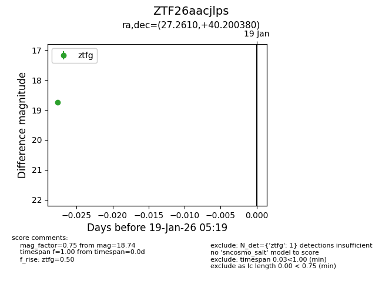
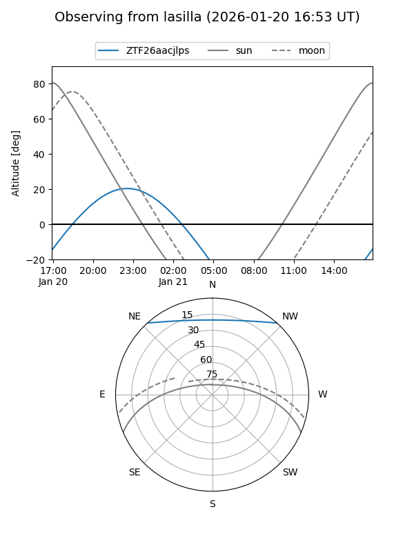
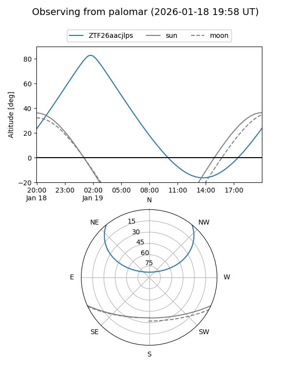

ZTF26aacjlps
Target ZTF26aacjlps at 2026-01-19 05:20
Aliases and brokers:
FINK: link
Lasair: link
ALeRCE: link
alt names
ZTF26aacjlps (ztf,fink_ztf)
Coordinates:
equatorial (ra, dec) = 27.2610,+40.20038
equatorial (HMS+DMS) = 01:49:02.63,+40:12:01.37
galactic (l, b) = (134.7009,-21.35125)
Flags:
Photometry:
last ztfg=18.74
1 ztfg detections
Lightcurve

Visibility


Additional plots